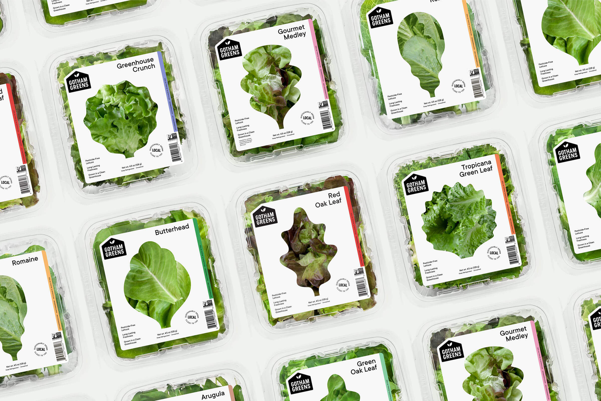
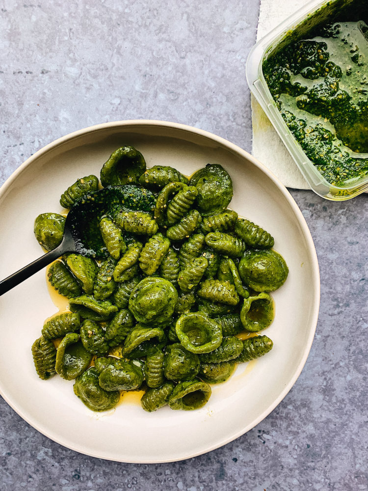
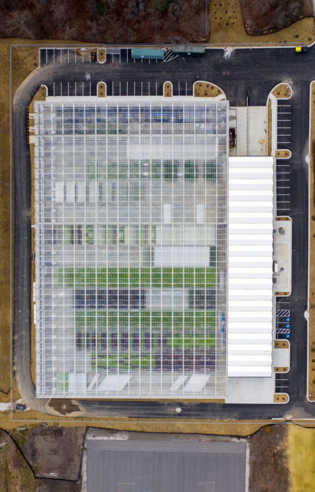

Read More in the Journal


Announcing
The Official Opening of our Baltimore...
Brasil Pasta Dought by
Social Pasta Club by Gotham
We Grow Incredibly Fresh Produce

The Official Opening of our Baltimore...
Social Pasta Club by Gotham